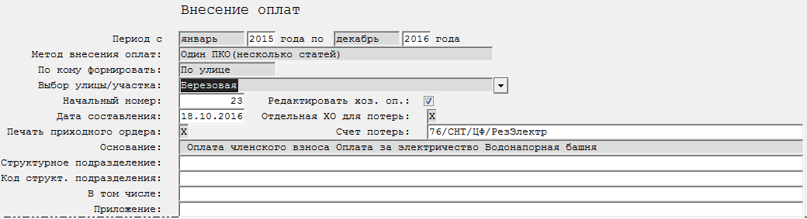

Бланк "Поступление платы (суммы оплат из операций по начислениям в ЖХО)"
|
|
Данный бланк позволяет формировать хозяйственные операции по оплате только при наличии в ЖХО хозяйственных операций по начислениям. |
Данный бланк предназначен для внесения оплат по участкам/гаражам на основе уже имеющихся в ЖХО начислений по статьям(рис. 1).

Рис. 1. Бланк "Поступление платы (суммы оплат из операций по начислениям в ЖХО)"Рассмотрим поля, необходимые для заполнения:
-
Период с ... по ... - указывается период, за который необходимо будет считать операции по начислениям из ЖХО.
-
Метод внесения оплат - выбирается метод внесения оплат - "Один ПКО(одна статья)" (в каждом ПКО будет только одна статья) или Один ПКО(несколько статей)(в один ПКО включается несколько статей).
-
По кому формировать - указывается, по кому вносить оплаты - По всем, По улице, По участку.
-
Выбор улицы/участка - указывается, по какой улице/участку вносятся оплаты. Доступность выбора зависит от значения в поле По кому формировать.
-
Начальный номер - указывается начальный номер документа. Присутствует автоматическая нумерация. Если документ с указанным номером уже существует, то будет выведено предупреждение.
-
Дата составления - дата составления документа/внесения оплаты.
-
Печать приходного ордера - настройка печати приходных ордеров.
-
Редактировать хоз. оп. - настройка вывода на редактирование хозяйственных операция перед внесением в журнал хозяйственных операций.
-
Отдельная ХО для потерь - указывается, есть ли в журнале отдельные хозяйственные операции по начислению за потери электроэнергии.
-
Счет потерь - указывается не последний уровень счета потерь(счет, который находится в кредите хозяйственной операции за потери электроэнергии).
-
Основание - указывается основания, за которое вносится оплата. Выбирается из справочника.
-
Структурное подразделение - указывается структурное подразделение.
-
Код структ. подразделения - указывается код структурного подразделения.
-
В том числе - указывается значения поля "В том числе".
-
Приложение - указывается значения поля "Приложение".
После заполнения полей, влияющих на расчет, необходимо пересчитать бланк.
Для этого нажмите кнопку
 на панели инструментов,
клавишу F9, или комбинацию клавиш Ctrl + Enter.
на панели инструментов,
клавишу F9, или комбинацию клавиш Ctrl + Enter.
Будут выведены окна редактирования хозяйственных операций (если установлена настройка редактирования хозяйственных операций) (рис. 2)
 Рис. 2. Окно редактирования хозяйственной операции
Рис. 2. Окно редактирования хозяйственной операциии будут напечатаны приходные ордера (если стоит настройка печати приходного ордера) (рис. 3).
 Рис. 3. Бланк "5.03. Поступление платы (суммы оплат из операций по начислениям в ЖХО)"
после пересчета
Рис. 3. Бланк "5.03. Поступление платы (суммы оплат из операций по начислениям в ЖХО)"
после пересчета